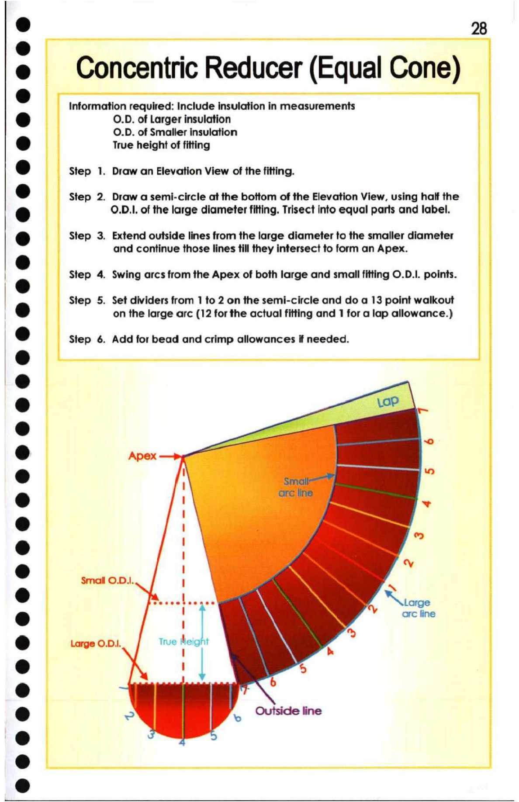

28. Concentric Reducer (Equal Cone) Reducer

* 28
: Concentric Reducer (Equal Cone)
® Information required: Include insulation in measurements
(a) O.D. of Larger insulation
O.D. of Smaller insulation
ie) True height of fitting
re] Step 1. Draw an Elevation View of the fitting.
6 Step 2. Draw a semi-circle at the bottom of the Elevation View, using half the
8 O.D.I. of the large diameter fitting. Trisect into equal parts and label.
t } Step 3. Extend outside lines from the large diameter to the smaller diameter
e and continue those lines till they intersect to form an Apex.
e Step 4. Swing arcs from the Apex of both large and small fitting O.D.I. points.
| Step 5. Set dividers from 1 to 2 on the semi-circle and do a 13 point walkout
| 0] on the large arc (12 for the actual fitting and 1 for a lap allowance.)
® Step 6. Add for bead and crimp allowances if needed.
8 -
B S)
@ Apex :
ia) ; —.
\ a
@ ! v
!
e .
@ |
!
% ] by
Smail 0.1. I &
fe) Niscdbvones Wines
r ) ! ] arc line
1
@ Large O.D1. True ts it 4 7
8 1 | 5
e 6
@ = ‘ Outside line